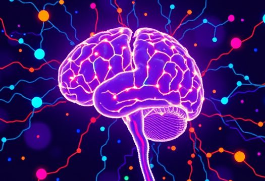
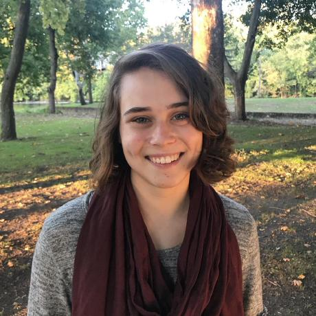
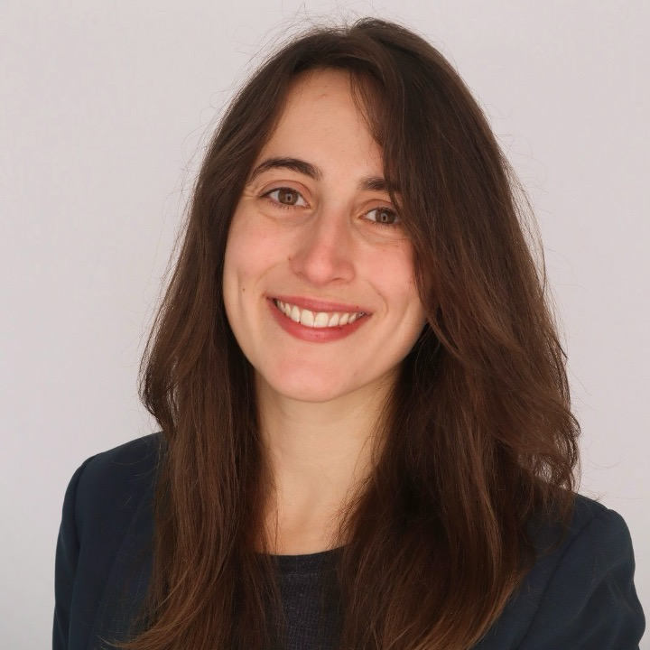
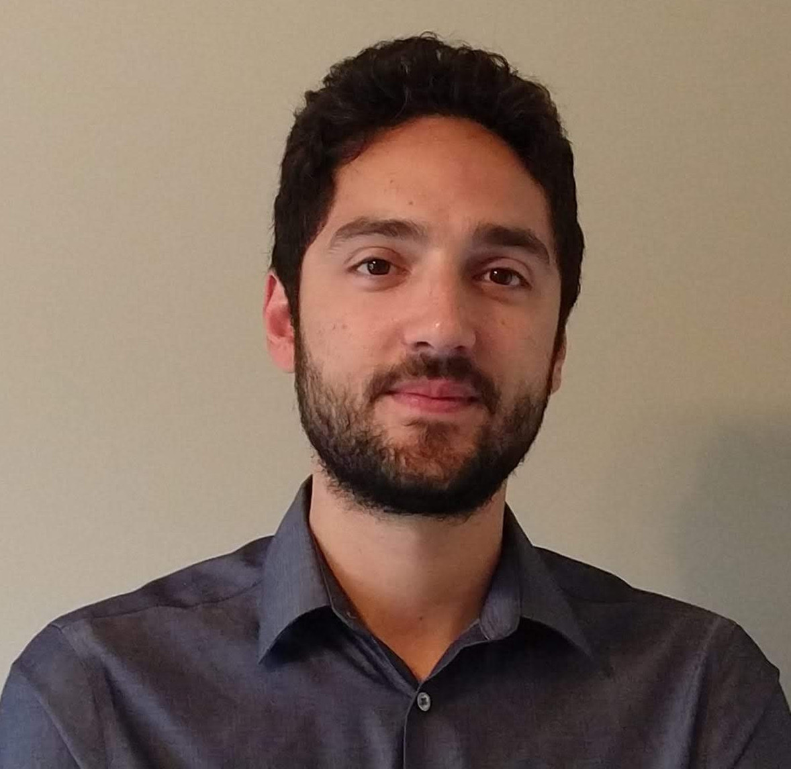
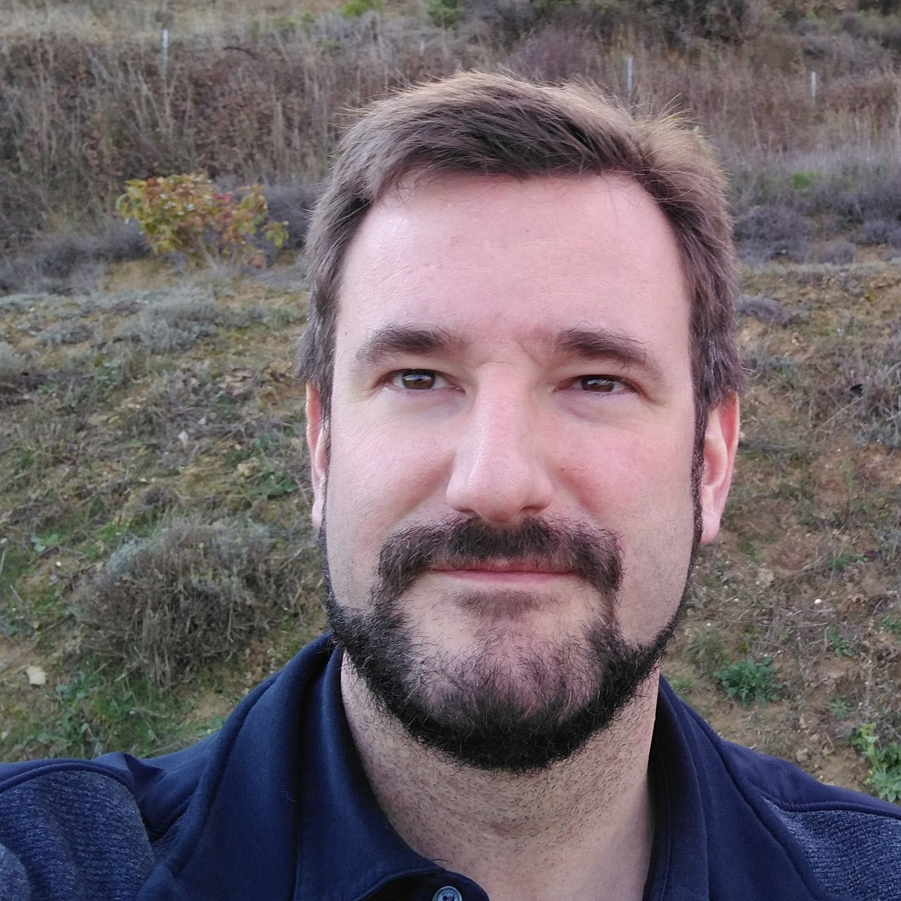
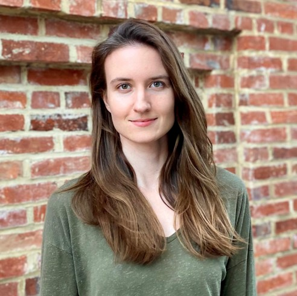

About
Ever-improving brain data acquisition techniques across species, scales, and modalities, and the embracement of open science and collaboration globally, means that the past few years have seen an acceleration in data collection and quality. Ever-increasing dataset sizes coupled with rich molecular, whole body, behavioural, and clinical information, demand novel approaches that are capable of taming and synthesizing these complex and multimodal features. Placing the brain within a context of complex systems and network science is therefore critical to progress. Network Neuroscience has emerged as a transdisciplinary field that draws from and contributes to multiple areas of science in the ultimate quest to undertsand the brain.
Network Neuroscience 2026 will, for the 12th year running, provide an opportunity for participants with diverse backgrounds to present cutting-edge research and exchange ideas across disciplinary boundaries.
Call for Contributions
We invite contributions from all areas of network neuroscience, including but not limited to:
- Brain -omics networks
- Structural brain networks
- Functional brain networks
- Network theory, modeling and analysis
- Network communication and information flow
- Circuit dynamics
- Brain-behavior interactions
- Systems neuroscience
- Fundamental and clinical neuroscience applications
- Brain-body network science
- Classical and deep learning for brain networks
- Spatio-temporal brain network models
Submissions are open for oral contributions and poster presentations. Submit your abstract here by March 13th in the format of a one-page pdf with one figure. Posters may be presented at both the satellite and at the main conference. Abstracts already accepted as oral presentations at NetSci'26 will not be selected for contributing talks at the satellite.
Note that you must register for NetSci to attend (there is an option to select only the satellite sessions and school) and the early bird registration deadline is March 20th.
Registration
Network Neuroscience is a satellite of the NetSci conference. You can register for Network Neuroscience through the NetSci website - select "Satellite events only" if you only wish to attend Network Neuroscience and other satellites. Please note that the early registration deadline is 20th March 2026.
Register here
Speakers

Monica Rosenberg
Department of PsychologyUniversity of Chicago
Rick Betzel
Department of NeuroscienceUniversity of Minnesota

Maria Pope
Department of NeurobiologyUniversity of Chicago
Yasser Iturria Medina
Department of Neurology and NeurosurgeryMontreal Neurological Institute-Hospital
Ashish Raj
School of MedicineUCSF
Schedule
Network Neuroscience 2026 will be held on Monday June 1st in Boston as a satellite of the International School and Conference on Network Science (NetSci 2026).
The poster session will take place in the Amesbury Ballroom of the Hyatt.
Registration
9:00am: Opening remarks
9:05am: TBC
Maria Pope
9:50am: Topological Higher-Order Features for Brain Network State Classification
Wafa Skhiri, Fabrizio De Vico Fallani
10:05am: Synergy mediates Long-Range Correlations in the Visual Cortex Near Criticality
Hardik Rajpal, Cedric Stefens, Meghdad Saeedian, Joe Canzano, Michael Kareithi, Mauricio Barahona, Spencer Smith, Simon Schults and Henrik Jeldtoft Jensen.
Sovesh Mohapatra, Christoffer Gretarsson Alexandersen, Panagiotis Fotiadis and Dani S Bassett.
10:35am: Coffee Break and Posters
11:00am: Rick Betzel, "Multi-scale network neuroscience"
Connectomes are comprehensive maps of the wiring within nervous systems, representing connections at the cellular and synaptic level (the nanometer scale) to regions and areas (on the centimeter scale). Network neuroscience focuses on modeling and analyzing these connectomes. While the primary goal of network neuroscience—understanding the principles of connectome organization and its impact on brain function—remains consistent across different scales, specific scientific questions often require examining particular spatial levels. For instance, exploring the relationship between clinical outcomes and connectome organization in humans currently requires analysis at the areal level. In my talk, I will present several ongoing research projects from my lab that span multiple scales of network neuroscience. These include nanoscale connectome analyses from model organisms such as C. elegans, Drosophila, and zebrafish, as well as large-scale functional MRI studies. I will conclude with a discussion of key open questions and challenges in the field, along with potential directions for advancing the discipline.
11:45am: Bicommunities of the Directed Human Connectome
Alexandre Cionca, Chun Hei Michael Chan, Francesca Saviola, Maciej Jedynak, Yasser Alemá-Gómez, Saina Asadi, Arthur Spencer, Olivier David, Ileana Jelescu, Patric Hagmann, Maria Giulia Preti and Dimitri Van De Ville.
12:00pm: Investigating the Whole-Body-Brain Connectome: Multi-Organ Network Dynamics
Leah Banellis, Dani Bassett and Micah Allen.
12:15pm: Gene Gradients Reveal Directed Structural Connectivity Across Species
Benjamin Sipes, Ashish Raj.
12:30pm: Lunch Break and Posters
2:30pm: Monica Rosenberg, "Functional brain network organization reflects ongoing thoughts"
Functional networks measured during rest (resting-state functional connectivity; rsFC) are widely used to characterize individual differences in cognition, yet cognitive dynamics during rest are rarely measured. This gap complicates interpretations of rsFC–behavior associations and limits understanding of how network organization relates to ongoing cognition. I will present evidence linking ongoing thoughts to large-scale functional network organization and behavior. During fMRI, participants rested while periodically rating and verbally describing their thoughts. Similarity in thought content predicted similarity in functional connectivity both across individuals and within individuals across rest periods. Thought dimensions (e.g., valence, future orientation) and free-speech topics were reliably decoded from connectivity patterns measured during individual rest periods. These predictive models generalized to independent Human Connectome Project data, such that decoded thought patterns tracked trait-level individual differences. Thus, ongoing thoughts are reflected in large-scale brain network dynamics, helping explain why rsFC predicts everyday cognition.
3:15pm: Ashish Raj, "Beyond Network Diffusion: Assessing the role of networks, genes, axonal transport and neuroinflammation"
Network Diffusion Model (NDM) and other models of spread of tauopathy, like the epidemic spread model, attempt to capture the process of trans-neuronal transmission of tau on brain networks. While these models have been quite successful, future advances will require the introduction of additional factors that govern tau vulnerability. In this talk I will describe current work on how to achieve these goals within a network mathematical framework. I will show that risk genes, cell types, neuroinflammation and amyloid beta all interact with an underlying network spread process to produce the patterns of tau seen in real patients. I will also describe emerging studies on the role of active axonal transport (instead of passive network diffusion), and show that this leads to directional bias in transmission, which is an under-studied yet potentially highly significant facet of the disease.
4:00pm: Coffee Break and Posters
4:30pm: TBC
Yasser Iturria-Medina
5:00: Compressibility of Neuronal Activity Across Dynamical Regimes
Lochan Chaudhari, Brennan Klein.
5:15pm: Distributed Information Bottleneck Reveals a Minimal Transcriptomic Signature of Alpha-Synuclein Pathology
Chanchal Bajoria, Julia Brynildsen, Michael Henderson and Dani Bassett.
5:30pm: Closing remarks
5:35pm - 6:30pm: Poster Session
LIST OF POSTERS
1. A Simple Dynamical Message-Passing Model Predicts Mammal Brain Anatomy. Randy Hong, Yan Hao and Daniel Graham.
2. Evolving Network Dynamics Reveal Critical Nodes in the Epileptic Brain. Marrium Shamshad, Igor Belykh, Mukesh Dhamala, Kevin Slote and Kelley Smith.
3. Synergy mediates Long-Range Correlations in the Visual Cortex Near Criticality. Hardik Rajpal, Cedric Stefens, Meghdad Saeedian, Joe Canzano, Michael Kareithi, Mauricio Barahona, Spencer Smith, Simon Schults and Henrik Jeldtoft Jensen.
4. Recurrence Network Analysis Uncovering Biomarkers of Depression from Nonlinear Dynamics underlying EEG Signals. Divya Sindhu Lekha, Angitha Jeesis C and Jasleen Gund.
5. Brain-Activity Flow on Brain Networks Uncovered by Topological Signal Processing. Flavia Petruso, Maria Giulia Preti and Dimitri Van De Ville.
6. The P-FIT ASD: Exploring an intelligence sub-network within the autistic brain.. Matthew McConnell, Joshua McConnell and Emma Towlson.
7. Bicommunities of the Directed Human Connectome. Alexandre Cionca, Chun Hei Michael Chan, Francesca Saviola, Maciej Jedynak, Yasser Alemá-Gómez, Saina Asadi, Arthur Spencer, Olivier David, Ileana Jelescu, Patric Hagmann, Maria Giulia Preti and Dimitri Van De Ville.
8. Topological representation of EEG signals for Seizure Prediction. Sunia Tanweer, Narayan Puthanmadam Subramaniyam and Firas Khasawneh.
9. Topological Higher-Order Features for Brain Network State Classification. Wafa Skhiri and Fabrizio De Vico Fallani.
10. A Stable Repertoire of Recurring States Governs Brain Dynamics During Longitudinal Narrative Viewing. Yibei Chen and Satrajit Ghosh.
11. Estimating directed connectivity from fMRI and structural priors via network diffusion model. Fahimeh Arab and Ashish Raj.
12. Back to the Future: Predicting Individual Tau Progression in Alzheimer's Disease. Robin Sandell, Justin Torok, Kamalini Ranasinghe, Srikantan Nagaranjan and Ashish Raj.
13. Analytical equivalences in imaging and network neuroscience. Mikail Rubinov.
14. Gene Gradients Reveal Directed Structural Connectivity Across Species. Benjamin Sipes and Ashish Raj.
15. QUIET: Quantifying Underutilized Influential Edges for Targeted Synchronization. Sovesh Mohapatra, Christoffer Gretarsson Alexandersen, Panagiotis Fotiadis and Dani S Bassett.
16. Identifying Network Factors Driving Changes in Brain Connectivity During Aging via Stochastic Actor-Oriented Models. Emma Garrison, Roberto Sotero Diaz and Javier Orlandi.
17. The spectral graph model: a minimal model of brain activity. Nuutti Barron and Ashish Raj.
18. Network deconvolution of MEG brain signal with the spectral graph model. Nuutti Barron, Fahimeh Arab, Anil Kamat and Ashish Raj.
19. Investigating the Whole-Body-Brain Connectome: Multi-Organ Network Dynamics. Leah Banellis, Dani Bassett and Micah Allen.
20. Brain Tumors Impact Network Efficiency via Disruption of Short-Range Connectivity. Omar Horan and Farnaz Zamani Esfahlani.
21. Paired NBS reveals focal and diffuse longitudinal changes in tangent-space connectomes in collegiate football athletes. Ruihong Lyu, Sumra Bari, Nicole Vike, Joaquin Goni and Thomas Talavage.
22. Centroid choice shapes self-identifiability, global geometry, and harmonization of tangent-space functional connectomes. Ruihong Lyu, Sumra Bari, Joaquin Goni and Thomas Talavage.
23. Compressibility of Neuronal Activity Across Dynamical Regimes. Lochan Chaudhari and Brennan Klein.
24. Distributed Information Bottleneck Reveals a Minimal Transcriptomic Signature of Alpha-Synuclein Pathology. Chanchal Bajoria, Julia Brynildsen, Michael Henderson and Dani Bassett.
25. Quantifying the cost of operations on networks. Suman Kulkarni and Dani S. Bassett.
26. Pairwise and higher-order triads in neuronal activity networks. Andrea Civilini, Fabrizio de Vico Fallani and Vito Latora.
Organizers

Maria Grazia Puxeddu
School of Neuroscience, Virginia Tech

Enrico Amico
University of Birmingham

Emma Towlson
University of Calgary

Joaquín Goñi
Purdue University

Kate Brynildsen
University of Pennsylvania
Christoffer Alexandersen
University of Pennsylvania
Contact
You can contact the organizers with any enquiries and/or expressions of interest to get involved. We would love to hear from you!
Email:
mpuxeddu at vt dot edu